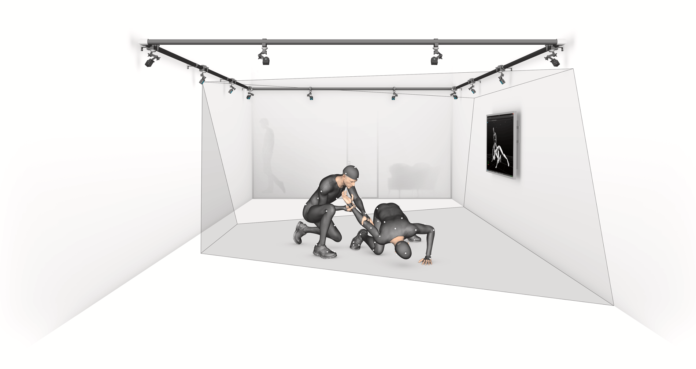
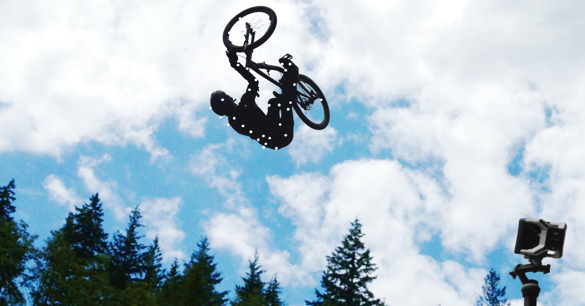
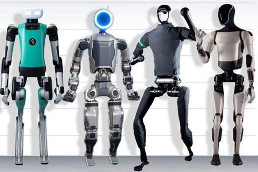
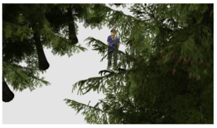
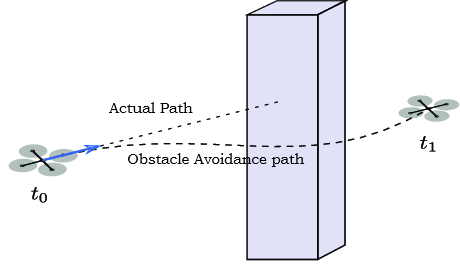
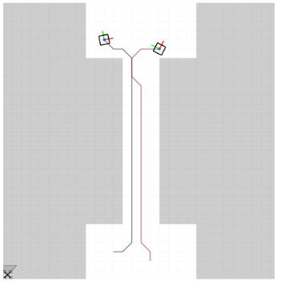
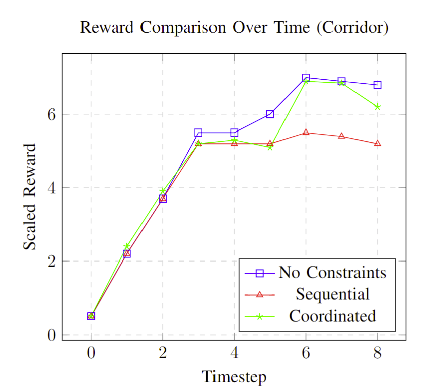
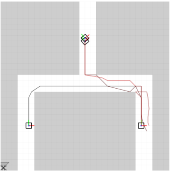
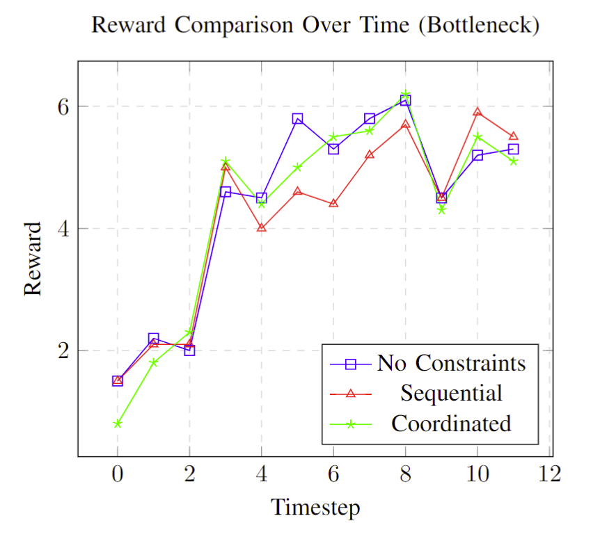

CoCap: Coordinated motion Capture for multi-actor scenes in outdoor environments
IROS Workshop 2024
Need for Enhancing Motion Capture Techniques for Outdoor Settings.

Motion Capture of multi-actor scenes for virtual production
(Figure referenced from Optitrack)

Outdoor scenes provide long horizon motion capture sequence
(Figure referenced from Optitrack)

Motion capture provides high quality data for humanoid training
(Harrison Schell from madevisual.co)
Key factors in high-quality multi-actor motion capture.

Multi-view capture

Occlusion reasoning

Obstacle Avoidance

Multi-person coverage
(Figure referenced from paperswithcode.com)

Reward Comparison:
Scenarios
2.5D Map
Corridor
Total actors: 2
Total horizon: 8
#Robots: 2
Bottleneck
Total actors: 4
Total horizon: 12
#Robots: 4
